I'm taking AP Calculus AB+BC this year, and recently I studied the 1st Fundamental Theorem of Calculus:
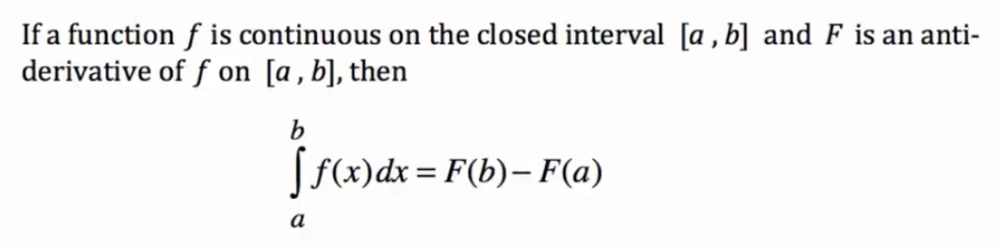
This theorem felt surprisingly familiar to me when I first learned it. I realized it was because I had studied the same idea in computer science, when I learned how to use prefix sum arrays.
The FTC-1 can be explained in words as: to find the area under a function's curve (i.e. sum of values) from a to b is the area under the curve from 0 to b minus the area under the curve from 0 to a.
This idea of finding the sum of a range by computing the sum of a larger range and then subtracting the "extra" range at the start is the same utilized by prefix sums. Here are two visualizations to demonstrate the correlation between the FTC-1 and prefix sums (also explained below).
Say we have a function f(x), graphed as such:
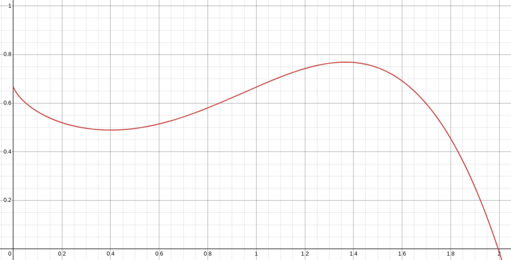
And we wanted to find the area under the curve from x = 1 to x = 2.
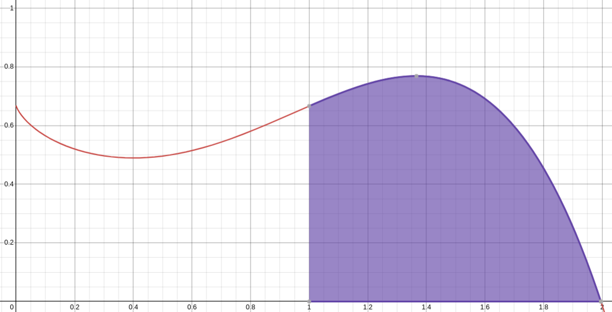
We can find this area using the FTC-1. First, we find the area from x = 0 to x = b, i.e. 2; this is F(b) (F(x) is the anti-derivative of f(x)):
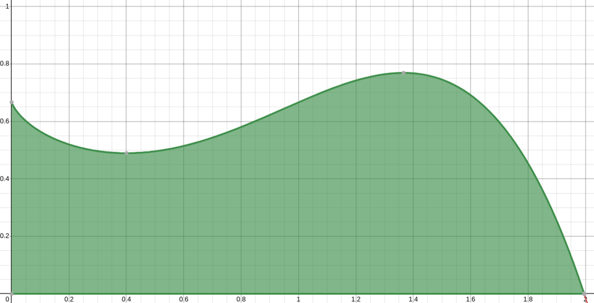
Then we find the area from x = 0 to x = a i.e. 1; this value is F(a):
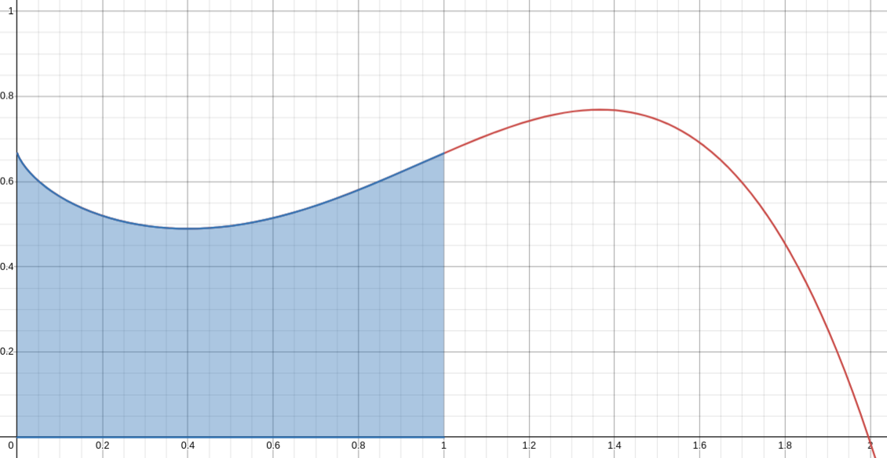
We can now simply subtract these two areas (subtract blue from green, i.e. F(b) - F(a)) to achieve the desired area:
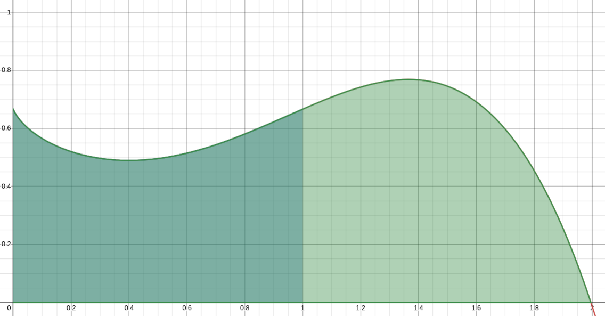
This concept is exactly the same as that used by prefix sums. Let's say we have 1-based index array defined below, and wanted to, repeatedly, find the sum of values in a range. For example, let's say the values from index 2 to index 5 (inclusive):
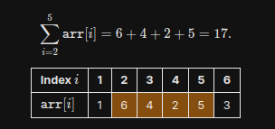
We could, for every query, naively iterate through the target range and sum up all the values, but this approach's runtime is O(N * Q), where N = len(array) and Q = nof queries. We can speed this up to O(Q) using prefix arrays. Let's examine a formula to represent the sum of a range:
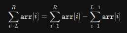
Using this observation, and the same concept of the FTC-1, we can pre-compute what's called the "prefix array": an array, where the value at index i is the sum of all the values from the start of the original array to the value at i (inclusive). Here's what the prefix array of our example array would look like:
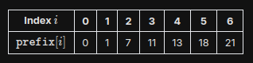
Using this prefix array, we can easily perform a subtraction of the sum of the "overarching" range and the "extra" range which isn't in our target range. From the above formula, we can now compute the sum of our target range in O(1) time. Here's the formula, which is very similar to the one of FTC-1:
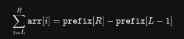
Now, for example, for our range from index 2 to index 5, we can simply perform the following to find our desired sum:
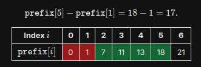
This is a cool cross-over I found and wanted to share while studying the two fields of computer science and mathematics, showing how interconnected they are and the shared underlying concepts beneath them.
Acknowledgements:
Ms. Henderson (NCSSM); my Calculus teacher for teaching me the 1st Fundamental Theorem of Calculus.
Desmos, used to draw graphs for the FTC-1 visualization.
USACO Guide; for the prefix sum visualization.